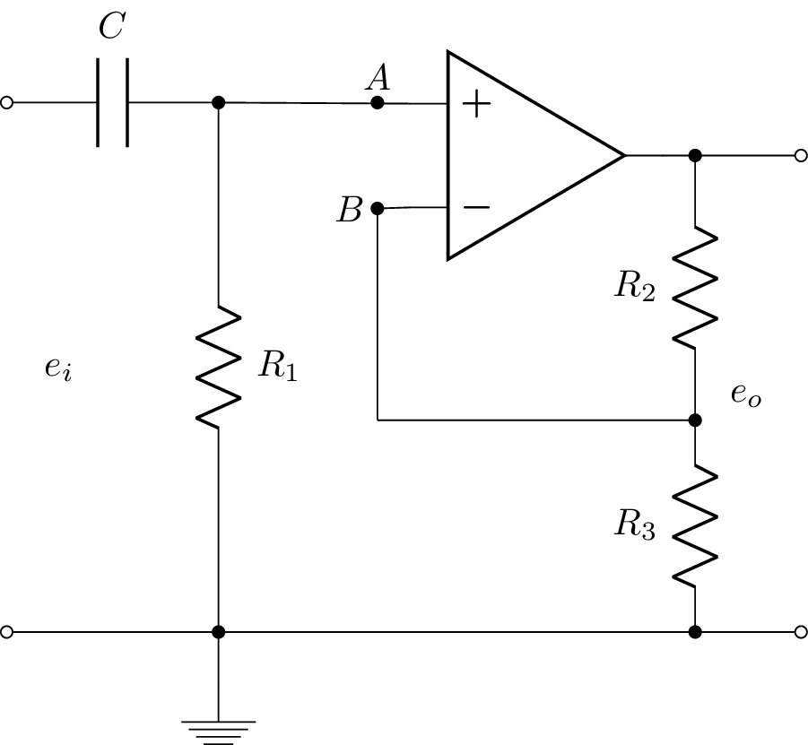

\documentclass{standalone}
\usepackage[american]{circuitikz}
\usepackage{graphicx}
\usepackage{mathrsfs}
\usepackage{latexsym,amssymb,amsmath}
\newcommand{\equal}{=}
\begin{document}
\begin{circuitikz}
%\draw (0,4) to [open,v^>=$v_1(t)$,o-o] (0,0) -- Open Short
\draw (0,6) to [open,l=$e_i$,o-o] (0,1) % input
(0,6) to [C, l^= $C$,-*] (2,6) %C
(2,6) to [R, l^=$R_1$,-*] (2,1) %R1
(2,1) -- (2,0.5) node[ground]{} %ground
(5, 5.5) node[op amp,yscale=-1] (opamp) {}
(2, 6) to [open, -*] (3.5,6) node[above]{$A$}
(2,6) -- (opamp.+)
(3.5,5) node[left]{$B$} to [short,*-] (opamp.-)
(opamp.out) to [short,-*] (6.5,5.5)
to [R, l_=$R_2$,-*] (6.5,3) %R2
to [R, l_=$R_3$, -*] (6.5,1)
(6.5,3) -- (3.5,3) % connect B to middle of resistors
(3.5,3) -- (3.5,5) % vertical connection to B
(6.5,5.5) -- (7.5,5.5)
(7.5,5.5) to [open,l_=$e_o$,o-o] (7.5,1) % output
(0,1) -- (7.5,1) % wire
;
\end{circuitikz}
\end{document}Created by David Li